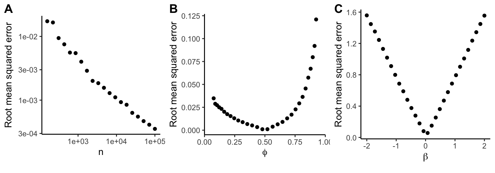

Approximating logistic coefficients
A simulation analysis
Developed by Gabriel Hoffman
Run on 2025-07-15 10:34:47.396961
Source:vignettes/beta_approx.Rmd
beta_approx.RmdUsing the z-statistic to approximate the coefficient from logistic regression model is most accurate for large sample size, balanced class ratio (i.e. near 0.5), and small .
